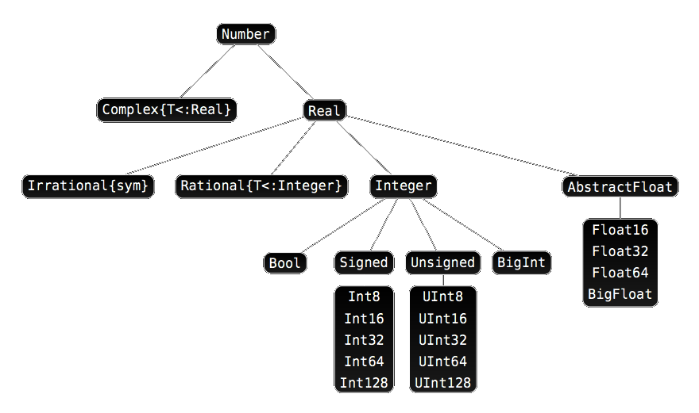

2 Tipos de datos y variables
2.1 Tipos de datos numéricos
- Enteros:
Int64(64 bits por defecto). - Racionales:
Rational{Int64}. Utilizando el operador//. - Reales:
Float64(64 bits por defecto). - Complejos:
Complex{Int64}. Utilizandoimdespués de la parte imaginaria.
Para averiguar el tipo de un dato se utiliza la función typeof().
2.2 Ejemplos de tipos de datos numéricos
julia> typeof(3)
Int64
julia> typeof(3/2)
Float64
julia> typeof(3//2)
Rational{Int64}
julia> typeof(π)
Irrational{:π}
julia> typeof(3+2im)
Complex{Int64}2.3 Jerarquía de tipos de datos numéricos

2.4 Constantes predefinidas
| Símbolo | Descripción |
|---|---|
pi o π |
Número irracional \(\pi\) |
ℯ (\euler + TAB) |
Número irracional \(e\) |
Inf |
Infinito |
NaN |
Valor no numérico |
Missing |
Valor desconocido |
2.5 Ejemplo de constantes predefinidas
julia> π
π = 3.1415926535897...
julia> 1 / 0
Inf
julia> 0 / 0
NaN
julia> Inf + Inf
Inf
julia> Inf - Inf
NaN
julia> 0 * Inf
NaN2.6 Tipos de datos alfanuméricos
- Caracteres:
Char. Se representan entre comillas simples. - Cadenas:
String. Se representan entre comillas dobles.
julia> typeof('a')
Char
julia> typeof("julia")
String
julia> typeof("a")
String2.7 Tipo de datos booleanos
- Booleanos:
bool. Son un subtipo de los enterosInteger.
Solo contienen dos posibles valores: true (1) y false (0).
julia> typeof(true)
Bool
julia> typeof(false)
Bool
julia> typeof(1 < 2)
Bool
julia> true + true
22.8 Variables
Como lenguaje de tipado dinámico, no es necesario declarar una variable antes de usarla. Su tipo se infiere directamente del valor asociado.
julia> x = 1
1
julia> typeof(x)
Int64
julia> x = "julia"
"julia"
julia> typeof(x)
StringNo obstante, para variables de ámbito local, por ejemplo en funciones, es posible fijar el tipo de una variable indicándolo detrás de su nombre con el operador ::.
x::Int642.9 Nombres de variables
Julia reconoce la codificación Unicode (UTF-8), lo que permite utilizar caracteres con tildes, letras griegas, símbolos matemáticos y hasta emoticonos en los nombres de variables o funciones. Para ello se utilizan códigos especiales (en muchos casos son los mismos que en LaTeX), pulsando después la tecla de tabulación.
julia> α = 1
1
julia> β = 2
2
julia> α + β
3
julia> 😄 = "julia"
"julia"Distingue entre mayúsculas y minúsculas.
2.9.1 Caracteres Unicode
La siguiente tabla contiene algunos caracteres Unicode habituales
| Código | Símbolo | Uso notes |
|---|---|---|
\euler |
ℯ |
Constante de Euler e |
\pi |
π |
Constante \(pi\) |
\alpha |
α |
|
\beta |
β |
|
\delta |
δ |
|
\Delta |
Δ |
Variación |
\gamma |
γ |
|
\phi |
ϕ |
|
\Phi |
Φ |
|
x\_1 |
x₁ |
Subíndices |
x\^2 |
x² |
Superíndices |
r\vec |
r⃗ |
Notación para vectores |
T\hat |
T̂ |
Notación para vectores unitarios |
\partial |
∂ |
Notación para derivadas parciales |
\nabla |
∇ |
Notación para el gradiente |
\circ |
∘ |
Operador de composición |
\cdot |
⋅ |
Operador de producto escalar |
\times |
× |
Operador de producto vectorial |
Los operadores pueden necesitar paréntesis, como por ejemplo (f ∘ g)(x) para la composición de g con f.
2.10 Operadores aritméticos
| Operador | Descripción |
|---|---|
x + y |
Suma |
x - y |
Resta |
x * y |
Producto |
x / y |
División |
x ÷ y |
Cociente división entera |
x % y |
Resto división entera |
x ^ y |
Potencia |
2.11 Operadores de comparación
| Operador | Descripción |
|---|---|
== |
Igualdad |
!=, ≠ |
Desigualdad |
< |
Menor que |
<=, ≤ |
Menor o igual que |
> |
Mayor que |
>=, ≥ |
Mayor o igual que |
2.12 Operadores booleanos
| Operador | Descripción |
|---|---|
!x |
Negación |
x && y |
Conjunción (y) |
x || y |
Disyunción (o) |
2.13 Funciones numéricas predefinidas
2.13.1 Funciones de redondeo
| Función | Descripción |
|---|---|
round(x) |
Devuelve el entero más próximo a x |
round(x, digits = n) |
Devuelve al valor más próximo a x con n decimales |
floor(x) |
Redondea x al próximo entero menor |
ceil(x) |
Redondea x al próximo entero mayor |
trunc(x) |
Devuelve la parte entera de x |
2.13.2 Ejemplo de funciones de redondeo
julia> round(2.7)
3.0
julia> floor(2.7)
2.0
julia> floor(-2.7)
-3.0
julia> ceil(2.7)
3.0
julia> ceil(-2.7)
-2.0
julia> trunc(2.7)
2.0
julia> trunc(-2.7)
-2.0
julia> round(2.5)
2.0
julia> round(2.786, digits = 2)
2.792.13.3 Funciones de división
| Función | Descripción |
|---|---|
div(x,y), x÷y |
Cociente de la división entera |
fld(x,y) |
Cociente de la división entera redondeado hacia abajo |
cld(x,y) |
Cociente de la división entera redondeado hacia arriba |
rem(x,y), x%y |
Resto de la división entera. Se cumple x == div(x,y)*y + rem(x,y) |
mod(x,y) |
Módulo con respecto a y. Se cumple x == fld(x,y)*y + mod(x,y) |
gcd(x,y...) |
Máximo común divisor positivo de x, y,… |
lcm(x,y...) |
Mínimo común múltiplo positivo de x, y,… |
2.13.4 Ejemplo de funciones de división
julia> div(5,3)
1
julia> cld(5,3)
2
julia> 5%3
2
julia> -5%3
-2
julia> mod(5,3)
2
julia> mod(-5,3)
1
julia> gcd(12,18)
6
julia> lcm(12,18)
362.13.5 Funciones para el signo y el valor absoluto
| Función | Descripción |
|---|---|
abs(x) |
Valor absoluto de x |
sign(x) |
Devuelve 1 si x es positivo, -1 si es negativo y 0 si es 0. |
julia> abs(2.5)
2.5
julia> abs(-2.5)
2.5
julia> sign(-2.5)
-1.0
julia> sign(0)
0
julia> sign(2.5)
1.02.13.6 Raíces, exponenciales y logaritmos
| Función | Descripción |
|---|---|
sqrt(x), √x |
Raíz cuadrada de x |
cbrt(x), ∛x |
Raíz cúbica de x |
exp(x) |
Exponencial de x |
log(x) |
Logaritmo neperiano de x |
log(b,x) |
Logaritmo en base b de x |
log2(x) |
Logaritmo en base 2 de x |
log10(x) |
Logaritmo en base 10 de x |
2.13.7 Ejemplo de raíces, exponenciales y logaritmos
julia> sqrt(4)
2.0
julia> cbrt(27)
3.0
julia> exp(1)
2.718281828459045
julia> exp(-Inf)
0.0
julia> log(1)
0.0
julia> log(0)
-Inf
julia> log(-1)
ERROR: DomainError with -1.0:
log will only return a complex result if called with a complex argument.
...
julia> log(-1+0im)
0.0 + 3.141592653589793im
julia> log2(2^3)
3.02.13.8 Funciones trigonométricas
| Función | Descripción |
|---|---|
hypot(x,y) |
Hipotenusa del triángulo rectángulo con catetos x e y |
sin(x) |
Seno del ángulo x en radianes |
sind(x) |
Seno del ángulo x en grados |
cos(x) |
Coseno del ángulo x en radianes |
cosd(x) |
Coseno del ángulo x en grados |
tan(x) |
Tangente del ángulo x en radianes |
tand(x) |
Tangente del ángulo x en grados |
sec(x) |
Secante del ángulo x en radianes |
csc(x) |
Cosecante del ángulo x en radianes |
cot(x) |
Cotangente del ángulo x en radianes |
2.13.9 Ejemplo de funciones trigonométricas
julia> sin(π/2)
1.0
julia> cos(π/2)
6.123233995736766e-17
julia> cosd(90)
0.0
julia> tan(π/4)
0.9999999999999999
julia> tand(45)
1.0
julia> tan(π/2)
1.633123935319537e16
julia> tand(90)
Inf
julia> sin(π/4)^2 + cos(π/4)^2
1.02.13.10 Funciones trigonométricas inversas
| Función | Descripción |
|---|---|
asin(x) |
Arcoseno (inversa del seno) de x en radianes |
asind(x) |
Arcoseno (inversa del seno) de x en grados |
acos(x) |
Arcocoseno (inversa del coseno) de x en radianes |
acosd(x) |
Arcocoseno (inversa del coseno) de x en grados |
atan(x) |
Arcotangente (inversa de la tangente) de x en radianes |
atand(x) |
Arcotangente (inversa de la tangente) de x en grados |
asec(x) |
Arcosecante (inversa de la secante) de x en radianes |
acsc(x) |
Arcocosecante (inversa de la cosecante) de x en radianes |
acot(x) |
Arcocotangente (inversa de la cotangente) de x en radianes |
2.13.11 Ejemplo de funciones trigonométricas inversas
julia> asin(1)
1.5707963267948966
julia> asind(1)
90.0
julia> acos(-1)
3.141592653589793
julia> atan(1)
0.7853981633974483
julia> atand(tan(π/4))
45.02.14 Precedencia de operadores
De mayor a menor prioridad.
| Categoría | Operadores | Asociatividad |
|---|---|---|
| Exponenciación | ^ |
Derecha |
| Unarios | + - √ |
Derecha |
| Fracciones | // |
Izquierda |
| Multiplicación | * / % & \ ÷ |
Izquierda |
| Adición | + - | |
Izquierda |
| Comparaciones | > < >= <= == != !== |
|
| Asignaciones | = += -= *= /= //= ^= ÷= %= |= &= |
Derecha |
2.15 Operaciones con cadenas
Las cadenas son secuencias de caracteres alfanuméricos del tipo char entre dobles comillas.
Cada carácter tiene asociado un índice entero. El primer carácter de la cadena tiene índice 1.
| Índice | 1 | 2 | 3 | 4 | 5 |
| Cadena | j | u | l | i | a |
Podemos acceder a cada carácter usando su índice entre corchetes a continuación de la cadena:
s[i]: Devuelve el carácter con índiceien la cadenas.
julia> c = "julia"
"julia"
julia> c[2]
'u': ASCII/Unicode U+0075 (category Ll: Letter, lowercase)2.15.1 Acceso a caracteres Unicode
Sin embargo, como Julia permite caracteres Unicode, el índice de un carácter en una cadena, no siempre se corresponde con su posición en la cadena. Ello es debido a que la codificación UTF-8 no utiliza el mismo número de bytes para representar los caracteres Unicode. Mientras que los caracteres habituales del código ASCII (letras romanas y números árabes) solo necesitan un byte, otros caracteres como los símbolos matemáticos requieren más.
| Índice | 1 | 4 | 5 | 6 | 9 |
| Cadena | ∀ | x | ∃ | y |
2.15.2 Ejemplo de acceso a caracteres Unicode
julia> c = "∀x ∃y"
"∀x ∃y"
julia> c[1]
'∀': Unicode U+2200 (category Sm: Symbol, math)
julia> c[2]
ERROR: StringIndexError: invalid index [2],
valid nearby indices [1]=>'∀', [4]=>'x'
Stacktrace:
[1] string_index_err(s::String, i::Int64)
@ Base ./strings/string.jl:12
[2] getindex_continued(s::String, i::Int64, u::UInt32)
@ Base ./strings/string.jl:233
[3] getindex(s::String, i::Int64)
@ Base ./strings/string.jl:226
[4] top-level scope
@ REPL[128]:12.15.3 Acceso a índices en cadenas
Las siguientes funciones permiten acceder a los índices de una cadena:
firstindex(c): Devuelve el índice del primer carácter de la cadenac.lastindex(c): Devuelve el índice del primer carácter de la cadenac.nextind(c, i): Devuelve el índice del carácter de la cadenacque sigue al carácter con índicei.prevind(c, i): Devuelve el índice del carácter de la cadenacque sigue al carácter con índicei.
2.15.4 Ejemplo de acceso a índices en cadenas
julia> firstindex(c)
1
julia> lastindex(c)
9
julia> c[9]
'y': ASCII/Unicode U+0079 (category Ll: Letter, lowercase)
julia> nextind(c,1)
4
julia> prevind(c, lastindex(c))
62.15.5 Subcadenas
Para obtener subcadenas se usan también los corchetes indicando los índices de inicio y fin separados por :.
s[i:j]: Devuelve la subcadena que va desde el índiceial índicej, ambos incluidos.
También se pueden obtener subcadenas con la siguiente función:
SubString(s, i, j): Devuelve la subcadena que va desde el índiceial índicej, ambos incluidos.
julia> c = "julia"
"julia"
julia> c[2:4]
"uli"
julia> SubString(c, 2, 4)
"uli"2.16 Concatenación de cadenas
a * b: Devuelve la cadena que resulta de concatenar las cadenasayb.a ^ i: Devuelve la cadena que resulta de repetir la cadenaael número de vecesi.repeat(a, i): Devuelve la cadena que resulta de repetir la cadenaael número de vecesi.
julia> a = "Hola"
"Hola"
julia> b = "Julia"
"Julia"
julia> a * b
"HolaJulia"
julia> b ^ 3
"JuliaJuliaJulia"2.16.1 Interpolación de cadenas
En una cadena se pueden introducir variables o expresiones precedidas del símbolo $, de manera que al evaluarlas julia sustituye la variable o expresión por su valor. Esto es muy util para formatear salidas.
julia> "1 + 2 = $(1 + 2)"
"1 + 2 = 3"
julia> s = "Julia"
"Julia"
julia> "Hola $s"
"Hola Julia"2.16.2 Otras operaciones comunes con cadenas
length(c): Devuelve el número de caracteres de la cadenac.findfirst(a, c): Devuelve el índice de la primera ocurrencia de la cadenaaen la cadenac. Siano es una subcadena decdevuelve nada (tipoNothing).findlast(a, c): Devuelve el índice de la última ocurrencia de la cadenaaen la cadenac. Siano es una subcadena decdevuelve nada (tipoNothing).findnext(a, c, i): Devuelve el índice de la primera ocurrencia de la cadenaaen la cadenacposterior al índicei.findprev(a, c, i): Devuelve el índice de la última ocurrencia de la cadenaaen la cadenacanterior al índicei.
2.16.3 Otras operaciones comunes con cadenas
occursin(a, c): Devuelvetruesi la cadenaaes una subcadena dec, yfalseen caso contrario.contains(c, a): Devuelvetruesi la cadenaaes una subcadena dec, yfalseen caso contrario.replace(c, a => b): Devuelve la cadena que resulta de sustituir la cadenaapor laben la cadenac.lowercase(c): Devuelve la cadenacen minúsculas.uppercase(c): Devuelve la cadenacen mayúsculas.prefix(c, a): Devuelvetruesi la cadenaaes un prefijo de la cadenac.suffix(c, a): Devuelvetruesi la cadenaaes un sufijo de la cadenac.split(c, a): Devuelve una lista con las cadenas que resulpan de partir la cadenacpor el delimitadora.
2.16.4 Ejemplo de otras operaciones con cadenas
julia> c = "Hola Julia"
"Hola Julia"
julia> length(c)
10
julia> findfirst("a", c)
4:4
julia> findlast("Ju", c)
6:7
julia> findlast("x", c)
julia> occursin("Julia", c)
true
julia> occursin("julia", c)
false
julia> replace(c, "a" => "o")
"Holo Julio"
julia> uppercase(c)
"HOLA JULIA"
julia> split(c, " ")
2-element Vector{SubString{String}}:
"Hola"
"Julia"2.17 Entrada y salida por terminal
Las siguientes funciones muestran una cadena en la terminal:
print(c): Muestra por la terminal la cadenacsin cambiar de línea.println(c): Muestra por la terminal la cadenacy cambia de línea.
La siguiente función permite leer una línea de texto desde la terminal:
readline(): Devuelve en una cadena una línea de texto introducida por el usuario en la terminal (hasta el carácter de cambio de línea\n)
julia> print("¿Cómo te llamas?")
¿Cómo te llamas?
julia> nombre = readline()
Alf
"Alf"
julia> println("Hola $nombre")
Hola Alf2.17.1 Conversión de cadenas en números
La función readline() siempre devuelve una cadena aún cuando se pregunte al usuario por un valor numérico. Para convertir una cadena en un dato numérico se utiliza la siguiente función:
parse(tipo, c): Covierte la cadenaca un número del tipo numéricotipo, siempre que puedad realizarse la conversión.
julia> print("Introduce tu edad")
Introduce tu edad
julia> edad = parse(Int, readline())
18
18
julia> println("Vas a cumplir $(edad + 1) años")
Vas a cumplir 19 años
julia> typeof(edad)
Int64